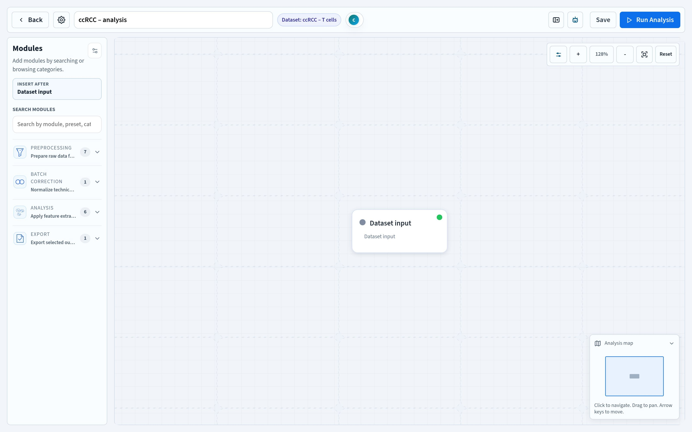
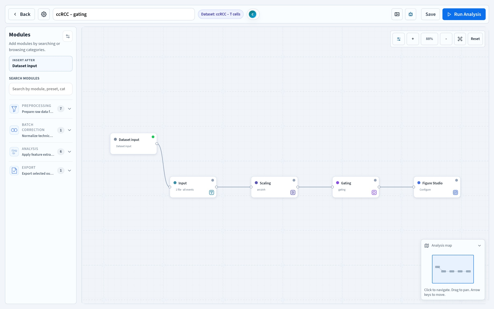
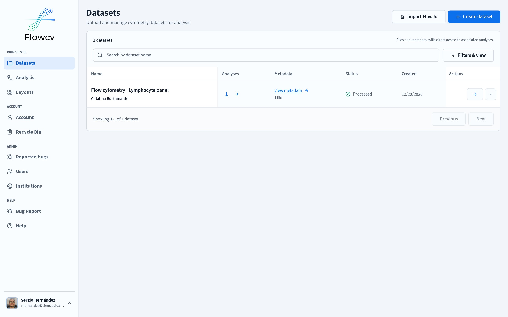
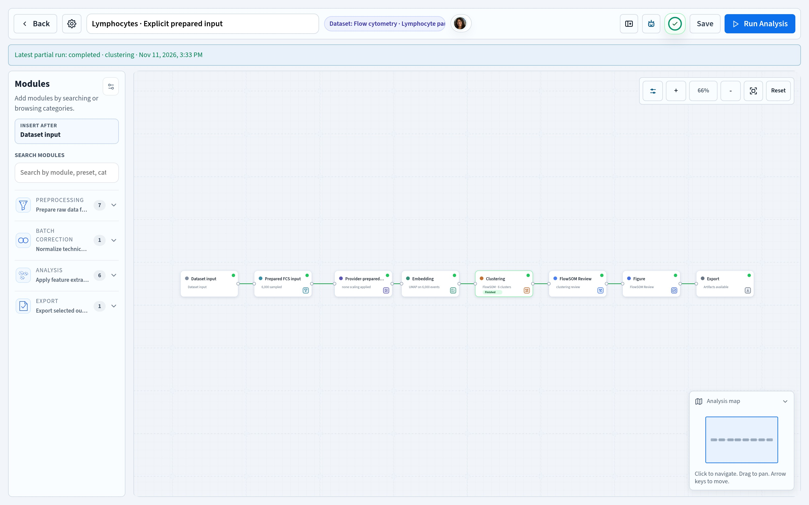

An explicit workflow preserves methods and parameters

Specify methods
Connect each method to the step that supplies its input.
Record parameters
Transformations, batch correction, UMAP and clustering retain their settings.
Preserve the workflow
Save the connected steps to review, share or rerun the analysis.
Population frequencies depend on the denominator

- Kidney dataset12 files
- Patient 5 tumor = 100%11,502 T cells
Define the parent population
CD4 × CD8: the CD8 T cells.
5,751 cells · 50% of inputSelect the nested phenotype
PD-1 × TIM-3: the PD-1⁺ TIM-3⁺ cells.
4,234 cellsSpecify the denominator
The same 4,234 cells are:
73.6% of the CD8 T cells36.8% of the input
Next: all twelve samples at once.
Shared workflows retain gates, parameters and results

Shared data
Access the same FCS files with defined viewing or editing permissions.
Shared analytical context
Review the same modules, parameters and gates; continue the analysis or reuse its settings.
Export results
One package: figures as PowerPoint (16:9), SVG, PDF or PNG; data as CSV or FCS; tables for GraphPad Prism.
Reusable figure layouts
Save them as templates on the Layouts page, share or export them, and keep several workspaces as tabs in Figure Studio.
Recomputing only the steps affected by a change

Change one parameter
FlowSOM: 6 → 8 groups, in the module's own Studio.
Recompute the clustering
A partial run. UMAP is kept as it was; Review, Figure and Export wait for the new result.
Preserve upstream results
FlowSOM now has 8 groups, computed in 6 s. Nothing upstream was computed again.
- Scaling cofactor 150 → 5: old results are refused for reuse.
- Recomputing only the dependent steps gives the same labels and the same exported file as recomputing everything.
- The cofactor change moved 33% of the cells to another group.